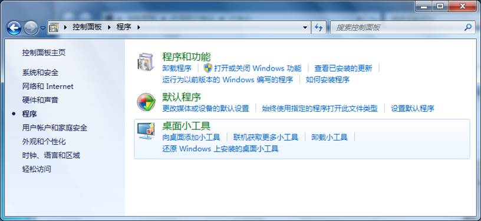
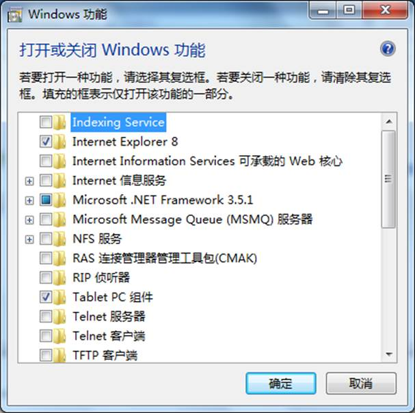
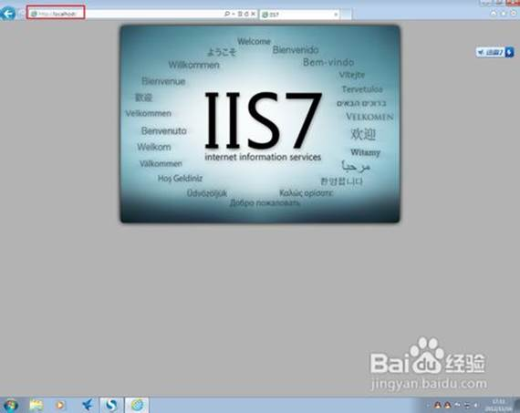
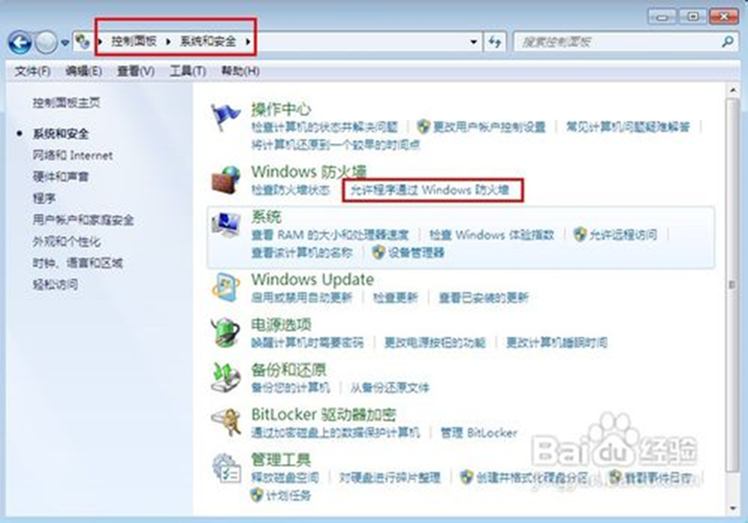
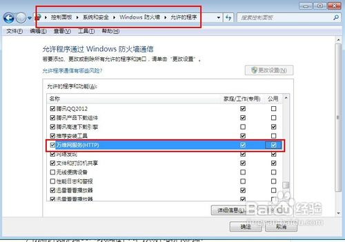
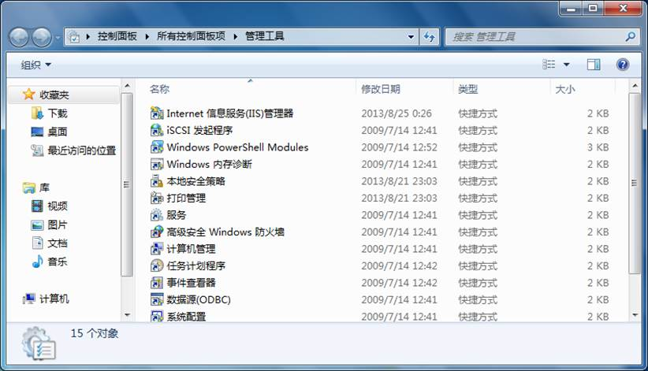
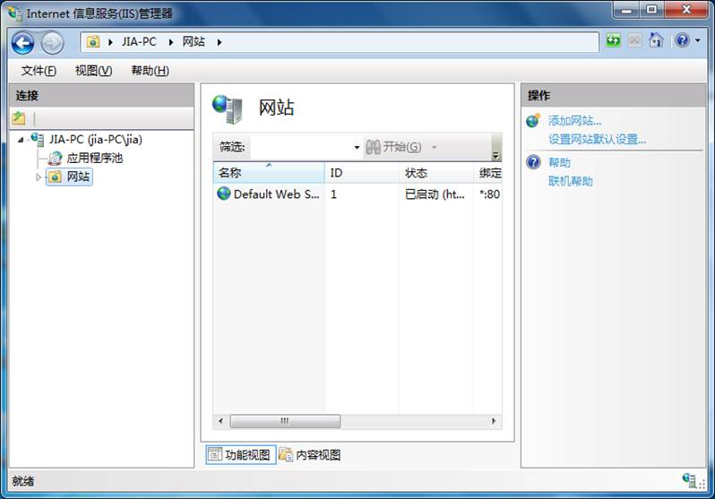
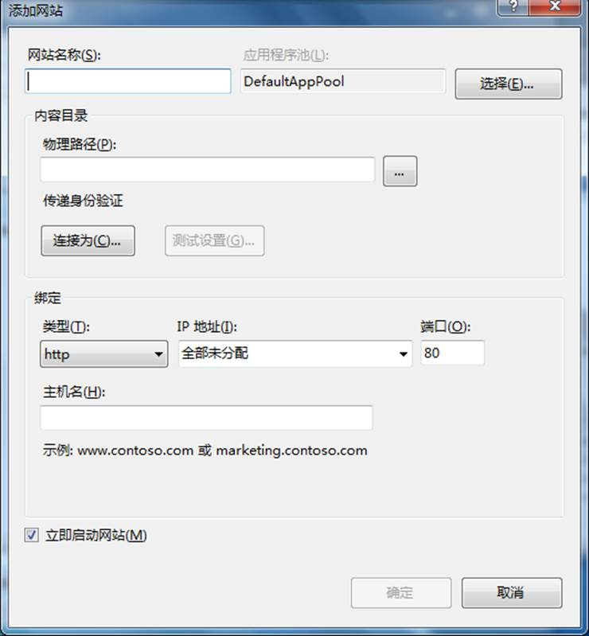
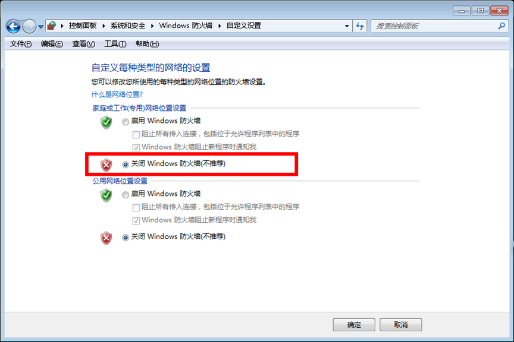

创建WEB服务器方法
-----配置IIS
1.实验目的
(1) 掌握win10下IIS的配置和测试方法
(2) 掌握win10下web的配置和测试方法
2．实验任务与要求
在win10环境下，配置WEB服务器，并能正常提供服务。
3．实验工具与环境
Windows 2007
4.实验步骤/操作指导
为了测试网站的发布，需要将计算机设置为一台Web服务器，为此，需要安装Microsoft的Internet信息服务（Internet Information Services，IIS）程序。
IIS程序也有不同的版本，下面以Windows10下的IIS7为例说明IIS的安装、配置以及网页的发布。
（1） 配置WEB服务器
首先安装II7，步骤如下：
① 打开控制面板，如图5-49 所示。
图5-49 “控制面板”窗口
② 在控制面板中单击“程序”按钮，控制面板的显示如图5-50所示。

图5-50 “控制面板”窗口
③ 在控制面板中单击“打开或关闭Windows功能”按钮，这时打开“Windows功能”窗口，如图5-51所示。

图5-51 “Windows功能”窗口
④ 在“Windows功能”窗口中选择“Internet信息服务”，将其所有功能都一个一个展开，并全部勾选，如图5-52所示。
图5-52 设置IIS选项
⑤ 勾选设置后单击窗口中的“确定”按钮，系统进行安装，这时显示如图5-53所示的对话框，安装要经过一段时间。
图5-53 安装提示
更新完成后，打开浏览器，输入http://localhost/或输入http://127.0.0.1/回车，如果此时出现IIS7欢迎界面，说明Web服务器已经搭建成功。


注意还要设置防火墙，目的是让局域网中其它计算机也能访问本地网站资源。具体方法：打开控制面板，选择“系统和安全”，点击“允许程序通过Windows防火墙” ，如下图所示

在弹出的对话框中勾选“万维网服务HTTP”右侧的两个复选框，最后点击确定退出。如下图所示：
此时你所使用的计算机的C盘上增加了一个文件夹C:\inetpub。系统默认的WEB网站就在此文件夹中。其路径是C:\inetpub\wwwroot，在该文件夹中应该有网页iisstart.htm。这表明你的WEB服务器已创建好了。
IIS安装后，系统默认的web网站在系统盘上，将创建的网站文件夹移动到该路径下就可以进行网页的发布了。
也可以在其他路径上设置网站，这里假定网站在E:\myweb下，设置方法如下：
① 在控制面板中打开“管理工具”窗口，如图5-4所示。

图5-54 “管理工具”窗口
② 在管理工具窗口中，单击“Internet信息服务(IIS)管理工具”，打开“Internet信息服务(IIS)管理工具”窗口，如图5-55所示。已有一个默认网站“Default Web Site”为启动状态。

图5-55 “Internet信息服务(IIS)管理工具”窗口
③在“Internet信息服务(IIS)管理工具”窗口中右单击“网站”，在弹出的快捷菜单中执行“添加网站”命令，这时打开“添加网站”对话框，如图5-56所示。

图5-56 “添加网站”对话框
④在对话框中：
l 输入已设计创建好的网站名称，例如“我的个人网站”；
l 指定物理路径，这里指定“E:\myweb”。
l IP地址可以设置为本机的IP地址
设置后单击“确定”按钮，这时网站创建完成。
由于默认网站处于“启动”状态，应该将其设置为“停止”状态，具体设置方法是：右单击站点名称，在快捷菜单的“管理网站”级联菜单（图5-57）中可以对网站进行“启动”、“重新启动”或“停止”等操作。
停止站点将停止 Internet 服务，并从计算机内存中卸载 Internet 服务。启动站点将重新启动或恢复 Internet 服务。

图5-57 “管理网站”级联菜单
注意此时你的WEB网站已发布成功了。假设你的计算机的IP地址是202.117.58.46，但在机房中其他同学使用的计算机中打开浏览器，输入“http://202.117.58.46/”按回车键，却无法浏览你网站。需要关闭WIN10防火墙，具体方法如下：控制面板→系统和安全→windows防火墙→打开或关闭防火墙，如下图：

选中“关闭Windows防火墙（不推荐）”，点击“确定”按钮。
2、设置“允许通过Windows防火墙”，具体方法：控制面板→系统和安全→允许程序通过Windows防火墙
这时两两同学可以合作测试对方网站发布情况，即打开浏览器输入对方同学的IP地址。